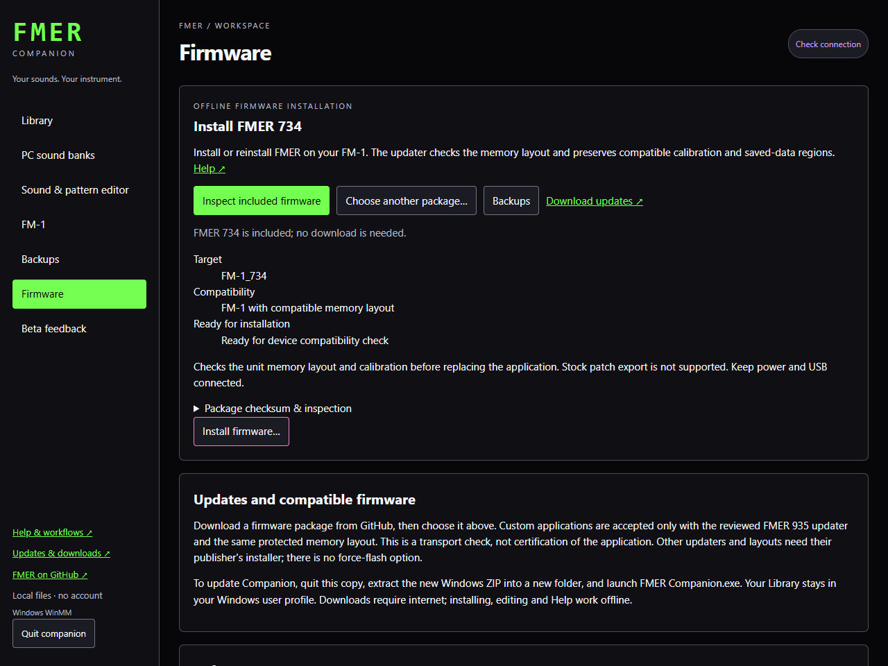

Care and updates
Inspect and install firmware
Install or reinstall FMER, understand compatibility and follow transfer progress.
Open Firmware, choose Inspect included firmware, then Install firmware. Keep only the intended FM-1 connected and close music applications using its MIDI ports. The app is local; installation does not require a hosted service.
Connection and compatibility
Use Check connection at the top right. A detected stock FM-1 is connected even though it cannot answer FMER backup/library commands. Install FMER before using those operations. Back up an existing FMER installation through Backups before reinstalling.
The installer no longer requires an identical application fingerprint. Its updater checks the supported1MiB flash chip, device key, staging record, application layout and unchanged configuration/calibration bytes. Application code may differ. Stock and FMER staging layouts are supported by the new updater; an unsupported layout is reported before application writing. This does not establish compatibility with every third-party firmware, hardware revision or broken bootloader.
During installation
The progress banner stays visible while preparing the updater, transferring the application, and waiting for the instrument to restart. Byte percentages describe the current transfer phase; they are not proof of final flash verification. Only Complete means the expected firmware identity returned. Leave power and USB connected and do not operate the instrument until completion. Other device controls are blocked while work is active.
If the browser temporarily loses contact with the local companion, it keeps the operation pending and retries status requests; it does not start another write. Reopening the same browser session resumes progress monitoring. Closing the app itself can interrupt a transfer.
If installation stops
Keep the instrument connected, read the message, and export the operation record. With this package's updater still running, reinstalling the same included package can resume if its record and calibration/layout remain verifiable. It does not automatically switch into a different recovery protocol or erase unknown data. Unknown updater versions, incompatible metadata or damaged boot firmware require a separate recovery procedure. Stock patch export is unavailable through this installer. Complete FMER backups are musical data, not boot/calibration recovery images.
The first16KiB of the device is never written by this updater. The distributed image contains only a public format compatibility descriptor in that region, not a private bootloader or unit identity. Technical details and hashes are available under the inspection disclosure and exported diagnostics.
Stock backup and return to stock
Stock USB MIDI has no verified patch-readback or full-backup command in this companion. We have recovered stock patches from a verified full ROM readback, but that separate recovery-mode procedure requires administrator access and reconnection; it is not a one-click portable feature. Restore Original Firmware accepts a supported user-provided V15 application image or verified ROM backup. Choose it on Firmware, inspect it, then confirm installation. The app preserves device-specific regions and verifies stock identity after reboot; this is not a full factory-settings reset. Preserve your own original ROM backup if you obtain one. Another unit’s full ROM contains its identity and calibration and is not a universal restore image. No stock ROM or proprietary bank is bundled.
If preparation stops
Close music apps using MIDI. Power the unit off and on, reconnect one unit, then Check connection and retry once. Export the operation record if the same error repeats. Do not keep retrying different cables when the unit identifies successfully but stops at the same preparation stage.
Compatibility check paused
A layout/calibration mismatch does not prove a different hardware revision. The application is not written when this preflight check fails. Companion automatically collects20 fixed metadata pages using its new updater. This reads only the application directory and configuration tail; it excludes boot identity/key and saved-bank partitions. Use the visible Export operation record button and share the exported JSON for support; you do not need to interpret it.
If an older updater is running, turn the unit off and on before using the included package. If normal stock firmware does not return, export the record rather than attempting an unrelated recovery image. The application transfer remains blocked until compatibility can be established; diagnostic collection is not a successful installation.
Preserving device-specific data
The installer preserves the final flash sector, including a small device-specific trailer. Its meaning is not assumed. A different trailer does not block installation when the remaining supported layout and calibration checks pass. Boot identity and saved-bank regions are not replaced.
Supported stock restore
Stock images are not bundled. This release supports the pinned V15 application family used in our verified units; unknown images are rejected before opening a device. A different firmware layout or bootloader is not made safe by requesting stock restore. Export diagnostics for compatibility review. Back up FMER musical data first. Interrupted stock restores may require support; do not substitute an unrelated recovery file.
New official M-VAVE firmware
The newly published official V15 file and the separate open V13 firmware have been inspected. They are distinct targets: a version label alone does not establish the same application/storage layout. The public V15 application exceeds the current qualified application slot and moves configuration regions; open V13 uses a different user-data map. Companion recognizes these exact files and explains the migration requirement instead of attempting an incompatible write. Neither is installed or bundled in this build. The existing Restore Original Firmware path remains for the previously qualified user-provided V15 image. Support for the new layouts needs a reviewed migration and rollback procedure, then hardware testing.
The vendor now explicitly licenses its published V15 resource under Apache-2.0. The remaining obstacle for this build is qualified migration, not a claim that all stock firmware lacks redistribution permission. Private dumps retain their separate rights and device-specific data.
Updating an existing FMER installation
Companion 734 can back up and manage both FMER 733 and 734. Its included firmware installs 734. Back up your working state, sounds and projects first, keep power and USB connected throughout the progress display, and wait for the completed identity check. Close other MIDI applications and connect only the instrument being updated. Installing firmware is separate from resetting either sound bank.
Updates from GitHub
Updates & downloads in the sidebar and Download updates on Firmware open the FMER GitHub releases in your browser. Download a .fwsc, then Choose another package and review it here. To update Companion itself, quit it, extract the new Windows ZIP into a new folder and launch FMER Companion.exe. Your user-profile Library and backups stay separate. Downloads need internet; installation, editing and Help work offline. There is no background download or automatic update.
Custom compatible firmware
Companion 734 r3 accepts a custom application only with the exact reviewed FMER935 updater, canonical FWSC envelope, matching application identity/entry instruction and unchanged protected memory layout, configuration and calibration. It rechecks the package immediately before connection; the device still performs its own preflight. Custom applications are labeled separately and have not been tested as an FMER release. Back up everything first; a different application can interpret saved data differently or lack Companion's commands. Other updaters/layouts are rejected with a readable reason. Use their publisher's installer; a .fwsc suffix alone does not establish compatibility. There is no force-flash option.

